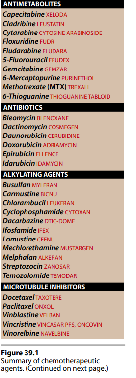
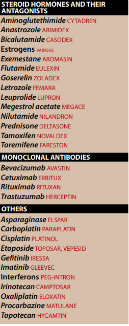

I.OVERVIEW
→ systemic chemotherapy
- result in cure or
- porlonged remission
II.Pricniples of Cancer Chemotherapy
→ chemotherapy cause
- lethal cytotoxic event
- apoptosis in the cancer cell
- DNA
- metabolic site essential to cell replication
- [e.g. // purines/pyrimidines that are building block for DNA/RNA synthesis]
→ anticancer drugs
- DO NOT recognize neoplastic cells
- but affect all kinds of profilating cells [both normal and abnormal]
II.Treatment strategies
II.A.1-Goals of treatment
→ cure (long-term , disease-free survival)
→ control of the disease
- stop enlarging or spreading.
- extend survival of human
- maintain best quality of life as possible
- surgery and/or radiation followed
- by chemotherapy
- immunotherapy
- or combination of these treatment
II.A.2-Indication for treatment
→ when neoplasm are disseminated
- and are not amenable to surgery
- surgery and radiation treatment in which called "adjuvant"
- lower doses to assist prolonging a remission
II.A.3.-Tumor susceptibility and the growth-cycle
→ rapidly dividing cells
- more sensitive to anticancer drugs
- slowing profilating cells are less sensitive to chemotherapy
- usually survive the toxic effects
II.A.3.a-Cell cycle specificity of drugs
→ effective only against replicating
- cell-cycle specific
- more toxicity in cycling cellls
- low percentage of replicating cells
II.A.3.b-Tumor growth rate
→ growth rate of most solid tumors
- initialy rapid
- as the tumor cell size increases
→ ↓ the tumor burden often promotes
- recruitment fo the remaining cells into active profilation
- ↑ thei susceptibility to chemotherapeutics agents
II.B.-Treatment regimens and scheduling
→ on the basis of body surface area
II.B.1.-Log kill
→ first order kinetics
- given dose of drug destroys a constant fraction of cells
II.B.2-Pharmacological sanctuaries
→ CNS tissues prevent the chemotherapeutics fron entering
→ irradiation of the craniospinal axis or intrathecal admin. of drugs to eliminate the leukemic cells at the site
II.B.3-Treatment protocols
→ combination-drug therapy is more t succesful than singe-drug treatment
II.B.3.a-Combination of drugs
→ cytotoxic agents
- different toxicities
- different molecular sites and mechanism of action
- combined at full doses
- result in higher rate of response.
II.B.3.b-Advantages of drug combination
- provide maximal cell killing within the range of tolerated toxicity
- effective against a broader range of cell lines
- may delay or prevent the developement of resistant cell lines.
II.B.c-Treatment protocols
→ protocols are applicable to a particular neopolastic state
→ e.g.// POMP
- Prednisone Onvovin Methotrexate Purinethol
- 21 days apart
II.C.-Problems associated with chemotherapy
→ toxins that present a lethat threat to the cells
- also including mechanisms that protect themselfs
II.C.1.Resistance
→some have inherrently resistance to most anti-cancer drugs.
→ muatation [particulary after prolonged admin. of suboptimal drug doses]
→ minimized by short-term,intensive,intermittent therapy with combination of dugs
→ combination are also effective against a broader range of resistant cells
II.C.2-Multidrug resistance
→ adenosine-triphosphate-dependent pumping of drugs out of the cell
→ in the presence of P-glycoprotein
→ corss-resistance following the use of unrelated agents also occurs
→ P-glycoprotein found in higher levels
- kideny,liver,pacnreas,small intestine,colon,adrenal gland.
- certain drugs at high concentration (verapaiml)
- can inhibit the pump and thus interfere with the efflux of the anticancer agent.
II.C.3.-Toxicity
→ killing rapidly dividing cancer cells
- affects normal cells undergoing rapid profilation
- bucca muscosal,bone marrow,GI muscosa,hair folicales.
II.C.3.a-Common adverse effects
→ narrow therapeutic index
- severe vomiting [admin. of antiemetic agents]
- stomatitis
- bone marrow suppression
- alopecia [transient]
- and others based on specific agents
II.C.3.b.-Minimizing adverse effects
→ may be ameliorated by intervention
→ use cytoprotectant drugs
- perfusing the tumor locacly
- removing some of the patients' marrow prior to intensive treatment
- intensive diuresis preventing bladder toxicities.
- by admin. of folinic acid
III.ANTIMETABOLITES
→ structually related to normal compounds within the cell
- interfere with the availability of normal purines/pyrimidine nucleotide prescursors
- either by inhibiting their synthesis or competing with them in DNA or RNA synthesis.
III.A.Methotrexate
→folic acid playes a central role in
- metabolic reactions
- tranfer of one-carbon units
- essential for cell replication
- acts as an antagonist
- by inhibiting dihydrofolate reductase[DHFR]
- converts folic acid to its active ,coenzyme form → [tetrahydrofolic acid][FH4]
1.MECHANISM OF ACTION
→ obtained from dietary source or produced by intestinal flora.
→ undergoes reduction to FH4
- via a reaction catalyzed by DHFR
- by active transport process
- drug diffuse into the cell
- strong affinity for DHFR
- effectively inhibit enzyme
- process that favour intracellular retention of the compound
- due to ↑ negative charge
- aslo potentialy inhibit DHFR
- ↓ production of compounds that depend on these coenzymes for their biosynthesis
- depletation of thymidine is the most promient effect
- depressed DNA/RNA and protein synthesis → cell death
- which bypasses the blocked enzyme and replenishes the folate pool.
→ non-profilating cells are resistant to MTX
- relative lack of DHFR
- thymidylate synthase
- gutamylating enzyme
- ↓ formation or ↑ breakdown
- due to amplification (production of additional copies) of the gene that codes for DHFR
- resulting in ↑ levels of this enzyme
3.THERAPEUTIC USE
→ MTX usually in combination with other drugs
→ effective against
- acute lymphotic leukemia
- choriocarcinoma
- Burkitt lymphoma
- breast cancer
- head and neck carcinomas
- severe psoriasis , rheumatoid arthritis , Crohn disease
III.4.a-Pharmacokinetics
→ absorbed at low doses from GIT
→ also admin. intramascular , intravenous and intrathecal routes
→ does not penatrate the blood-brain-barrier
→ high concentrations found in
- intestinal epithelium , live , kideny
- ascites and pleural effusions.
III.4.b-Fate
→ polyglutamates which also inhibit DHFR
- remain within the cell even in the absence of extracellular drug.
→ much less active as an antimetabolite.
- less water-soluble
- lead to crystalluria
- urine alkaline
- patient hydrated
- primarly via urine
- feces[due to enteropathic excrection]
III.5.a.-Adverse effects
→ nausea , vomiting , diarrhea most frequent
→ stomatitis , myelosuppression , erythema , rash , urticaria , alopecia
→ long term lead to cirrhosis
→ MTX is teratogenic in experimental animals
- abortifacient
- SHOULD BE AVOIDED in pregnancy.
III.B.-6-MERCAPTOPURINE
→ thiol analog of hypoxanthine
- first purine analgs
- Azathioprine
- immunosuppressant,exerts its cytotoxic effects after conversion to 6-MP.
- maintence of remission in acute lymphoblastic leukemia.
- Crhn disease
- nucleotide formation
- must penetrate target cells → along [6-MP-ribose phosphate][TIM]
- metabolic processes involving purine synthesis and intercorvention are affected by the nucleotide analog
- (GMP)-guanosine-monophosphate
- (IMP)-inosine-monophosphate
- TIMP converted to thio-guanine monophsosphate
- which incoroporated into RNA.
- results in nonfunctional RNA and DNA.
III.B.2.-Resistance
1) inability to biotransofrm 6-MP to the corresponding nucleotide because of decreased levels
2)↑ dephosphorylation
3)↑ metabolism of the drug to thiouric acid or other meteabolites
III.B.3.-Pharmacokinetics
→ oral roulte is erratic and incomplete
→ widely distributed throughout the body
- except for CFS
→ Alluprinol
- frequently used to reduce hyperuricemia in cancer patients
- is important to ↓ the dose of 6-MP by 75%
- to avoid accumulation of the drug and exacerbation of toxicities
- is important to ↓ the dose of 6-MP by 75%
- parent drug excreted by the kidney.
iII.B.4.-Adverse Effects
→ bone marrow depression is the pricnipal toxicity.
→ anorexia , nausea , vomiting , diarrhea.
III.C.6.-6-Thioguanine
→ purine analogs
→ primarly used in the treatment of acute nonlymphocytic leukemia.
- in combinaiton with daunorubicin and cytarabine
- converted intracellulary to TGMP (6-thiogualinic acid)
- further converted to di and triphosphates , thioguanosine diphosphate
- which inhibit the biosynthesis of purines and phosphprylation of GMP → guanosine diphosphate
- further converted to di and triphosphates , thioguanosine diphosphate
- nucleodite form of 6-TG incorporated into DNA that leads to cell-cycle arrest.
III.C.1.-Pharmacokinetisc
→ absorption of oral 6-TG is
- incomplete and erratic
→ urin
to be continiouned,.
{kind=link}
{kind=link}
{kind=link}